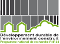

Credits for ScapeToad development
Developers
Dominique Andrieu (UAR CNRS 3501 - Maison des Sciences de l'Homme Val de Loire (MSH VdL)): conceptualization, tests, documentation.
Christian Kaiser (University of Lausanne): conceptualization, Java implementation.
André Ourednik (Chôros Laboratory, EPFL-ENAC-INTER): production coordination & supervision, conceptualization, documentation, logo, website.
Project
The ScapeToad project has been developed as part of the project "Our Inhabited Space", under the direction of Prof. Jacques Lévy, Chôros Laboratory, EPFL-ENAC-INTER. The project gratefully acknowledges the support of the SNF NRP54 research grant.

References
- Appel, A., Stein, A. and Evangelisti, C. (1983). Animating quantitative maps with cellular automata. IBM Technical Disclosure Bulletin, 26(3A): 953-956.
- Bailey, W.B. (1911). Apportionment maps of the United States. The Independant, 6 April 1911.
- Cosgrove D. E. (2001). Apollo’s Eye: a cartographic genealogy of the earth in the Western Imagination. JHU Press, 2003.
- Dorling, D. (1996). Area cartograms. Their use and creation. Geo Abstracts, University of East Anglia, Norwich.
- Dougenik, J., Nicholas, A., Chrisman, R. and Niemeyer, D. (1985). An algorithm to construct continuous area cartograms. Professional Geographer, 37(1): 75-81.
- Du, C. and Liu, L. (1999). Constructing contiguous area cartogram using ArcView Avenue. In Proceedings of GeoInformatics ’99, 19-22 June 1999, Ann Arbor, University of Michigan.
- Gastner, M.T. and Newman, M. (2004). Diffusion-based method for producing density equalizing maps. In Proceedings of the National Academy of Sciences of the United States of America, 101(20): 7499-7504.
- Gusein-Zade, S. and Tikunov, V. (1993). A new technique for constructing continuous cartograms. Cartography and Geographic Information Systems, 20(3): 66-85.
- Henriques, R.A.P. (2005). Carto-SOM: Cartogram creation using self-organizing maps. Master thesis, Instituto Superior de Estatistica e Gestão de Informação da Universidade Nova de Lisboa.
- Herzog, A. (2005). MAPresso. Computer program.
- Jackel, C.B. (1997). Using ArcView to create contiguous and noncontiguous area cartograms. Cartography and Geographic Information Systems, 24(2): 101-109.
Keim, D.A., North, S.C. and Panse, C. (2005). Medial-axis-based cartograms. IEEE Computer Graphics and Applications. 25(3): 60-68. - Kocmoud, C.J. (1997). Constructing continuous cartograms: A constraint-based approach. Master thesis, Texas A&M Visualization Laboratory, Texas A&M University.
- Krygier, J. (2008). 1911 Cartogram: “Apportionment Map”. Web page.
- Latour, B. (1987). Science in action: how to follow scientists and engineers through society. Harvard University Press.
- Langlois, P. (2003). Anamorphose par transformations pseudo-équivalentes. In 6èmes Rencontres de ThéoQuant, Besançon, Laboratoire ThéMA.
- Tobler, W. (2004). Thirty five years of computer cartograms. Annals of the Association of American Geographers, 94(1): 58-73.
- Vividsolutions Inc. (2008). JUMP Unified Mapping Platform. Website.
- W3C (2003). Scalable Vector Graphics (SVG) 1.1 Specification. W3C Recommendation.
- Wolf, E.B. (2005). Creating contiguous cartograms in ArcGIS 9. In Proceedings of the 25th Annual International ESRI User Conference, 25-29 July 2005.